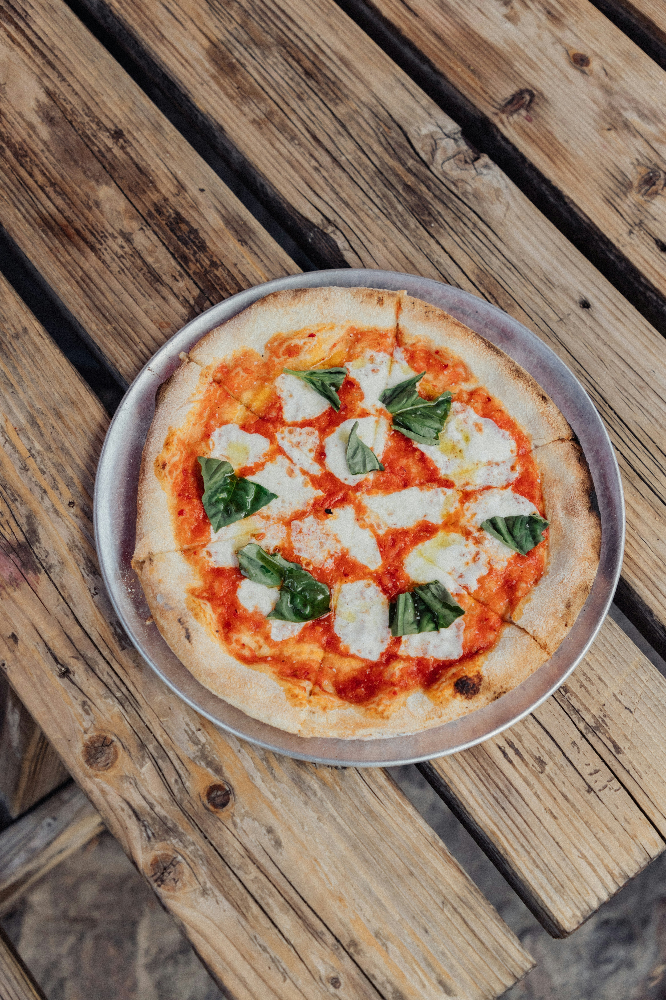
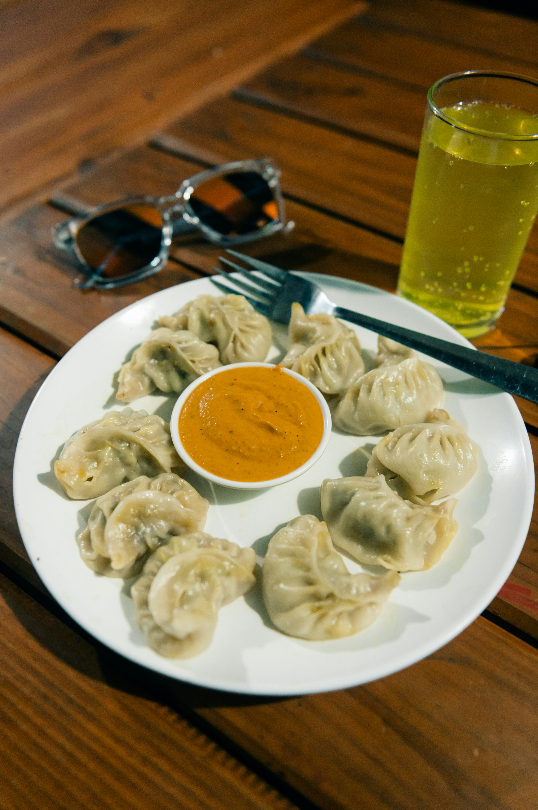
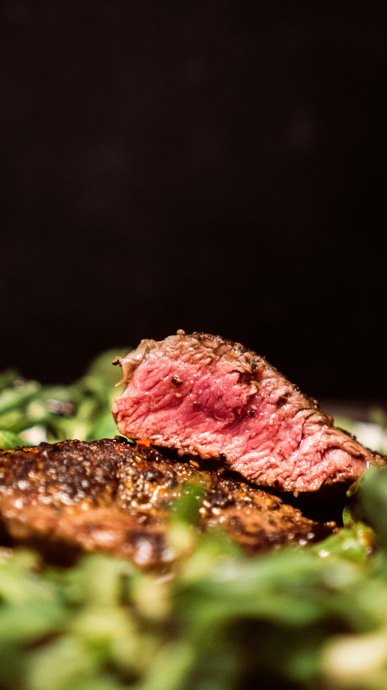

Margherita Pizza has been my favorite dish ever since I tried it. I just like how basic it is, it doesn't do too much, but it carries a lot of flavor. I have had it multiple times whether it was from a local pizza spot or here at the uri pizza place. But my favorite place has to be a pizza place in NYC. I forgot the name of the place it was this semi fancy place, and they served a great pizza
| Ingredients |
|---|
| Fresh mozzarella cheese |
| Crushed Tomato Sauce |
| Yeast Dough Crust |
| Basil |
| A little olive oil on the top |

| Ingredients |
|---|
| Dough Wrapper |
| Savory filling(meat or vegetable) |

| Ingredients |
|---|
| Your meat of choice(His pick was sirloin) |
